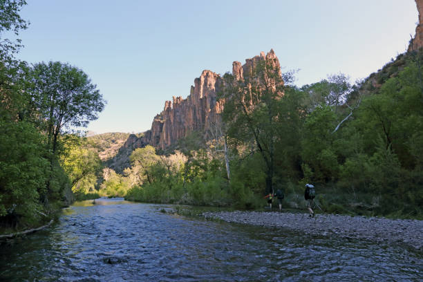

Why I Enjoy Camping
Camping is one of my favorite hobbies because it gives me a chance to get away from normal daily stress and spend time outside. I like being around trees, mountains, and fresh air instead of being indoors all the time. It is a good way for me to relax and take a break from everything else going on.
The Gila National Forest is a great place for camping because it has a lot of beautiful scenery and quiet areas. I like that there are different places to explore, and each trip feels a little different. Being able to set up camp, cook outside, and enjoy the area makes it a fun experience.
Another reason I enjoy camping is because it helps me appreciate simple things more. Hiking during the day and sitting by the fire at night makes the trip feel peaceful. Camping in the Gila National Forest is something I enjoy and would like to keep doing in the future.
Things I Like to Do While Camping
- Set up camp and unpack supplies
- Cook meals outside
- Go hiking on trails
- Take pictures of the scenery
- Relax by the campfire
Places in the Gila I Would Like to Visit
- Cosmic Campground
- Lake Roberts Recreation Area
- Gila Cliff Dwellings area
- Mogollon Box area
Camping Image

I picked this image because it matches the kind of outdoor scenery I think of when I think about camping in the Gila. It shows the natural side of the area and fits the reason I chose this topic for my page.
Camping Gear Table
| Item | Use | Importance |
|---|---|---|
| Tent | Shelter for sleeping | High |
| Sleeping Bag | Warmth at night | High |
| Camp Stove | Cooking food | Medium |
| Flashlight | Light at night | High |
| Water Jug | Carry drinking water | High |